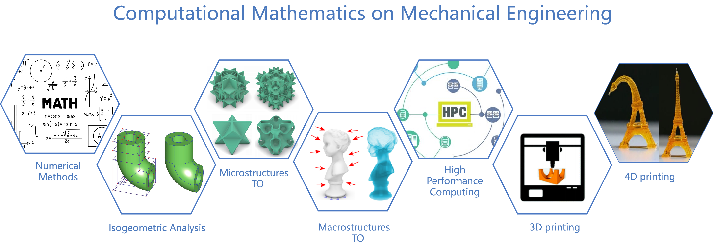

Research Interests
- (Differentiable) microstructures design / Metamaterials design
- Topology optimization (Stress constraints / Isogeometric analysis)
- Additive manufacturing / 3D Printing / 4D Printing
- Numerical methods/ Numerical optimization
Employment
-
Graphics & Geometric Computing Laboratory, School of Mathematical Sciences, USTCAug. 2023 – NowAssistant Professor Topic: AI for Microstructures design; Computer aided geometric design
-
Department of Mechanical and Automation Engineering, the Chinese University of Hong KongSep. 2022 – Aug. 2023Research Associate Cooperation Supervisor: Prof. Wei-Hsin Liao Topic: Negative Poisson's ratio structure design
-
Graphics & Geometric Computing Laboratory, School of Mathematical Sciences, USTCMay. 2021 – Aug. 2023Postdoctoral Fellow Cooperation Supervisor: Prof. Falai Chen, Prof. Linghui He Topic: Microstructures design
Education Experience
-
Graphics & Geometric Computing Laboratory, School of Mathematical Sciences, USTCJul. 2015 – May. 2021
PhD student
Supervisor: Prof. Falai ChenTopic: Structural Design and Path Planning in Additive Manufacturing
-
Department of Sustainable Design Engineering, Delft University of Technology, The NetherlandsSep. 2019 – Mar. 2021
Joint training of doctoral students Supervisor: Prof. Jun Wu Topic: Topology optimization of differentiable microstructures
-
Science of Information & Computation, Northeastern UniversitySep. 2011 – Mar. 2015
Bachelor's degree
Honors & Awards
| Outstanding Ph.D. Thesis Award of Chinese Academy of Sciences, 2022 (中国科学院百篇优博论文) |
| Outstanding Graduates of USTC, 2021 (中国科学技术大学优秀毕业生) |
| Ph. D. Dissertation Excellence Program, 2020 (中国科学技术大学博士论文创优计划) |
| National Scholarship in China, 2017/2014 |
| Meritorious Winner of MCM/ICM, 2014 |
Academic Services
CAD, CMAME, AM, IJNME, SMO, EC, VC, VPP, etc;
Topology Optimization Section of Advances in Computer Graphics, USTC, 2023 (中国科学技术大学《计算机图形学前沿》暑期课程);
Seminar on Frontiers of Mathematics and Interdisciplinarity, USTC, 2023 (中国科学技术大学 《数学与交叉学科前沿研讨会》);
Summary of Invitation Presentation (2023);
Member of Geometric Design and Calculation Committee of China Society of Industrial and Applied Mathematics; (中国工业与应用数学学会几何设计与计算专业委员会委员/GDC专委);
Executive Member, CCF Professional Committee; (CCF专业委员会执行委员/CAD&CG专委);
安徽省图形计算与感知交互重点实验室，秘书长;